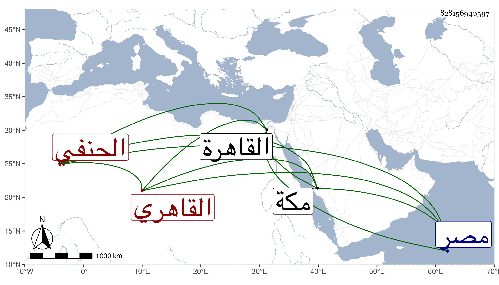

0902Sakhawi.DawLamic.ITO20230111-ara1.EIS1600.828156940597
Biography ID: 828156940597
أحمد بن إسماعيل بن صدقة الشهاب القاهري الحنفي صهر الأمشاطي ابن أخي زوجته ويعرف بابن الصائغ . ولد في سنة أربع وخمسين وثمانمائة بالقاهرة وأخذ عن الشمني والأقصرائي والتقي الحصني وكذا العلاء وبرع وتنزل بعناية صهره في الجهات كالأشرفية بل استنابه في القضاء واستمر به مع فضيلة عقل وتودد ، وقد حج في سنة ست وتسعين ثم في سنة ثمان وتسعين كلاهما في الموسم وتردد إلي في كليهما ثم في سنة سبع وسبعمائة وجاور سنة ثمان وسكن بالمدرسة الزمامية فأصابه ما أصاب المسلمين من التهبة العام من بني إبراهيم وأعوانهم ولم يبقوا أسوة كنزله شيئا من المسلمين . ثم حج سنة ثمان ورجع إلى مصر سالما عمر سسه سافر من مكة في أوائل محرم برا صحبة الأتابكي قيت الرجبي .
